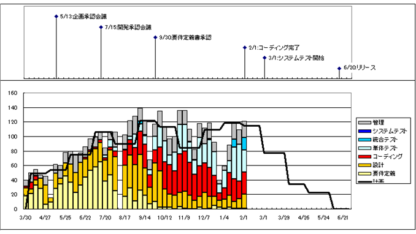
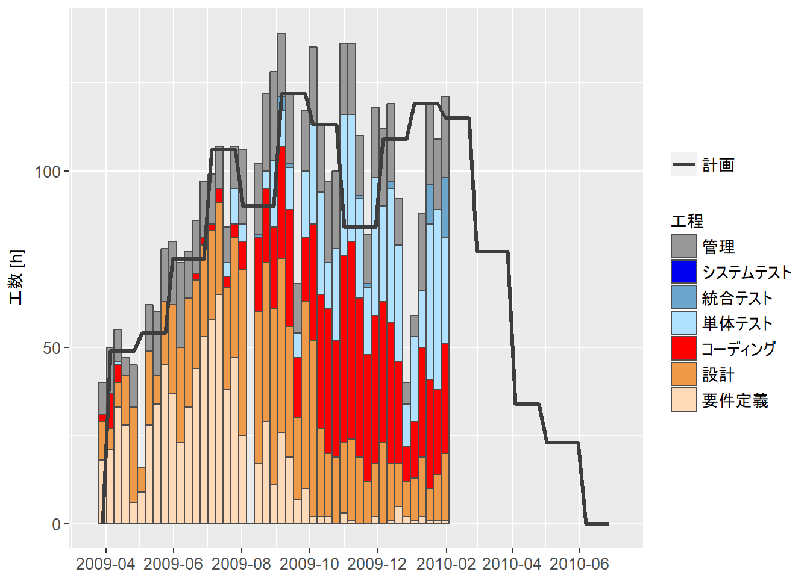
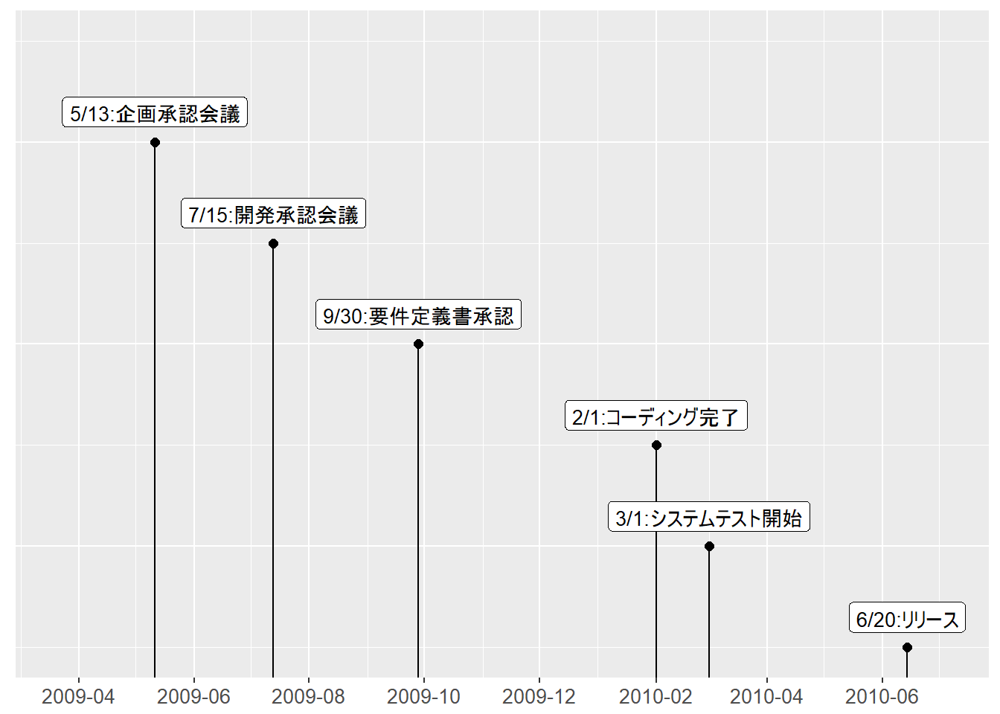

工数推移の把握
目的
- プロジェクトの健全性（危険な兆候）を把握する
利用する手法
- 工数推移グラフ
手法利用時の前提・制約
- 開発工数を定期的に収集する
プロジェクトの健全性（危険な兆候）
- 予定通りに進まない
- 必要なプロセスを省く
- 無理な残業で作業をこなす
- 上記の状況が把握できていない
※プロジェクトリーダーの主観的な判断にマネジメントが委ねられることが要因となり、このような状況に陥ることがある。
工数推移グラフ
- 工数実績の積み上げ棒グラフと計画工数の折れ線グラフの２つで構成される。
- 積み上げ棒グラフ
- 横軸：週単位の日付
- 縦軸：工数実績の合計値
- 工数実績：工程単位で集計し、積み上げ棒グラフで表現
- 折れ線グラフ
- 縦軸：週単位の計画工数
工数推移グラフで把握すること
- 工程の移行状況
- 工程毎の工数消化状況が表現されるため、工程の移行状況を視覚的に把握できる。
- 自組織の工程移行のパターンと照らし合わせて見ることで、異常に気づくことができる。また、今後の予測をすることができる。
- 工数配分
- 工程毎の実績工数が面積で表現されるため、工程毎の工数配分が把握できる。
- 自組織の標準的な工数配分と比較することで、異常に気づくことができる。また、今後の予測をすることができる。
- 工数の予実差
- 折れ線グラフと棒グラフを比較することで、工数の予実差を用意に比較できる。
- 現時点での工数の超過、不足に気づくことができる。また、今後必要となる工数を予測することができる。
工数推移グラフの工夫点
- 配色
- 同系統の工程は、配色も同系統とする （例）作りこみ工程を暖色系、テスト工程を寒色系とする
- 工程毎の実績工数の割合や推移を一目で把握できる
- マイルストーンの表示
- グラフにはマイルストーンも表示する （例）リリース日、各工程の完了予定日
- 各工程の遅れを一目で把握できる

コード
ggplot2 で工数推移グラフを作図する。
パッケージのロード
本サンプルの実行には以下のパッケージが必要。
library(tidyverse)
library(grid)
library(gridExtra)
library(lubridate)工数推移データの読み込み
工数推移データは書籍「 データ指向のソフトウェア品質マネジメント メトリクス分析による「事実にもとづく管理」の実践 」付属の 事例データ （要パスワード）を使用。
R 3.5.1 では日本語ファイル名のファイルの読み込みができないため、ファイル名の変更が必要。
sheet <- "2.1.5"
# sheet <- "2.1.6"
readxl::read_xls(path = "2.1Web公開データ20120908.xls", sheet = sheet) %>%
dplyr::select("日付", "日付（文字列変換）", "要件定義",
"設計", "コーディング", "単体テスト", "統合テスト",
"システムテスト", "管理", "計画", "マイルストーン名",
"マイルストーンデータ") -> man_hour
rm(sheet)
# 3行目まで表示。
head(man_hour, n = 3)データの整形
工数推移データから、ggplot2 で作図するためのデータを作成。
予定工数／実績工数
工数推移のデータを tidy data に変換。日付は週に変換する。
man_hour %>%
# 列の絞り込み。
dplyr::select(-"日付（文字列変換）",
-マイルストーン名,
-マイルストーンデータ) %>%
# 日付を Date 型に変換。
dplyr::mutate(日付 = as.Date(日付)) %>%
# wide data から narrow data に変換。
tidyr::gather(key="工程", value="工数", -"日付") %>%
# 工数が na の行を削除
dplyr::filter(! is.na(工数)) %>%
# 演習データでは特に必要ないが、日付を週（その週の日曜日）に変換、週、および工程で工数を集計。
# lubridate::wday() は日付を曜日に変換する関数。デフォルトでは日曜～土曜をそれぞれ1～7で返す。
dplyr::mutate(週 = 日付 - lubridate::days(lubridate::wday(日付) - 1)) %>%
dplyr::select(-日付) %>%
dplyr::group_by(週, 工程) %>%
dplyr::summarise(工数 = sum(工数)) %>%
# 週、工程でソート。
dplyr::arrange(週, 工程) -> tidy_weekly_man_hour
# 最初の3週分のデータのみ表示。
head(tidy_weekly_man_hour, n = 24)変換後データから実績工数をフィルタリング。実績工数のデータを作成。
process_step <- c("要件定義", "設計", "コーディング",
"単体テスト", "統合テスト", "システムテスト", "管理")
tidy_weekly_man_hour %>%
# 工程が実績工数の行のみ抜き出す。
dplyr::filter(工程 %in% process_step) %>%
# 工程の順番を定義するため、因子型に変換。
dplyr::mutate(工程 = factor(工程, levels = process_step)) %>%
# 週、および工程でソート。
dplyr::arrange(週, 工程) -> tidy_weekly_actual_man_hour
# 最初の3週分のデータのみ表示。
head(tidy_weekly_actual_man_hour, n = 21)同様に予定工数のデータを作成。
tidy_weekly_man_hour %>%
dplyr::filter(工程 == "計画") %>%
dplyr::arrange(週) -> tidy_weekly_estimate_man_hour
# 最初の3週分のデータのみ表示。
head(tidy_weekly_estimate_man_hour, n = 3)マイルストーン
マイルストーンのデータを作成。
man_hour %>%
dplyr::select(日付, マイルストーン名) %>%
dplyr::filter(! is.na(マイルストーン名)) %>%
dplyr::mutate(日付 = as.Date(日付)) %>%
dplyr::arrange(日付) %>%
# マイルストーンデータは演習データのを使用しない。
dplyr::mutate(マイルストーンデータ = nrow(.):1) -> milestone
# 最初の2つのみ表示。
head(milestone, n = 2)作図
工数推移グラフ
予定工数、および実績工数のデータから工数推移グラフを作成。
# x軸のスケールの設定はマイルストーンのグラフと共用するため、予めオブジェクト化しておく。
start_date <-
min(min(tidy_weekly_man_hour$週) - lubridate::days(7), milestone$日付)
end_date <-
max(max(tidy_weekly_man_hour$週) + lubridate::days(7), milestone$日付)
scale_x <-
ggplot2::scale_x_date(limits = c(start_date, end_date),
date_breaks = "2 months",
date_minor_breaks = "1 month",
date_labels = "%Y-%m")
process_step_color <- c("peachpuff1", "tan2", "red1",
"lightskyblue1", "skyblue3", "blue2", "gray60")
g_man_hour <-
ggplot2::ggplot() +
scale_x +
# 実績工数の積み上げ棒グラフを追加。
# 順番の若い工程を下に積むため、 forcats::fct_rev() で因子の水準を逆順にしている。
# 積み上げ棒グラフの幅（引数 width）は絶対値で指定しているため、データが変わったら調整が必要。
ggplot2::geom_bar(data = tidy_weekly_actual_man_hour,
mapping = ggplot2::aes(x = 週, y = 工数,
fill = forcats::fct_rev(工程)),
stat = "identity",
position = "stack",
colour = "grey30",
width = 7) +
# 積み上げ棒グラフの色を設定。
ggplot2::scale_fill_manual(values = rev(process_step_color),
name = "工程") +
# 予定工数の折れ線グラフを追加。
ggplot2::geom_line(data = tidy_weekly_estimate_man_hour,
mapping = ggplot2::aes(x = 週, y = 工数, colour = 工程),
size = 1.2) +
# 折れ線の色を設定。
ggplot2::scale_colour_manual(values = c("gray24"),
name = NULL) +
#
ggplot2::xlab(NULL) +
ggplot2::ylab("工数 [h]") +
ggplot2::ggtitle(label = NULL) +
ggplot2::theme(axis.text = element_text(size=10),
axis.title = element_text(size=10),
legend.text = element_text(size=10),
legend.title = element_text(size=10),
legend.key.height = unit(16, "pt"))
plot(g_man_hour)
マイルストーングラフ
マイルストーンのデータからグラフを作成。
g_milestone <-
ggplot2::ggplot(
data = milestone,
mapping = ggplot2::aes(x = 日付, y = マイルストーンデータ,
label = マイルストーン名)
) +
scale_x +
ggplot2::scale_y_continuous(
limits =
c(min(milestone$マイルストーンデータ),
max(milestone$マイルストーンデータ) + 1)
) +
# マイルストーンを散布図で表示。
ggplot2::geom_point(size = 2) +
# マイルストーンの点から下に伸びる直線を描画。
ggplot2::geom_segment(
data = milestone,
mapping = ggplot2::aes(x = 日付, y = -Inf,
xend = 日付, yend = マイルストーンデータ)
) +
# ラベルの表示。直線の上に表示するため、 ggplot2::geom_segment() より後に追加。
ggplot2::geom_label(vjust = 0, nudge_y = 0.15, size = 3.5) +
#
ggplot2::xlab(NULL) +
ggplot2::ylab(NULL) +
ggplot2::ggtitle(label = NULL) +
ggplot2::theme(axis.text.y = element_blank(),
axis.ticks.y = element_blank(),
axis.text = element_text(size=10))
plot(g_milestone)
工数推移グラフ／マイルストーングラフ
2枚のグラフを上下に並べ1枚のグラフに纏める。
# ggplot2 plot を glob として扱えるようにする。
g1 <- ggplot2::ggplotGrob(g_milestone)
g2 <- ggplot2::ggplotGrob(g_man_hour)
# グラフの横幅を揃える。
# grid::unit.pmax() により、幅が大きいほうに揃える。
max_width <- grid::unit.pmax(g1$widths, g2$widths)
g1$widths <- max_width
g2$widths <- max_width
# 2つの glob を縦に並べて表示。
gridExtra::grid.arrange(g1, g2, nrow = 2, heights = c(0.45, 0.55))
まとめ
- プロジェクトの工程移行状況、工数配分、工数予実差などを把握することで、プロジェクトの危険な兆候を察知できる。
- 留意点
- 一目で把握できる工夫をすること
- 人の助けになるアクションに結びつけること
- 工数入力を定着させること
環境
R.version## _
## platform x86_64-w64-mingw32
## arch x86_64
## os mingw32
## system x86_64, mingw32
## status
## major 3
## minor 4.4
## year 2018
## month 03
## day 15
## svn rev 74408
## language R
## version.string R version 3.4.4 (2018-03-15)
## nickname Someone to Lean On参考文献
野中 誠，小池 利和，小室 睦「データ指向のソフトウェア品質マネジメント メトリクス分析による「事実にもとづく管理」の実践」（2012年）日科技連出版社
松村 優哉，湯谷 啓明，紀ノ定 保礼，前田 和寛「RユーザのためのRStudio［実践］入門 tidyverseによるモダンな分析フローの世界」（2018年）技術評論社
The MIT License
Copyright (c) 2018 データ分析勉強会事務局